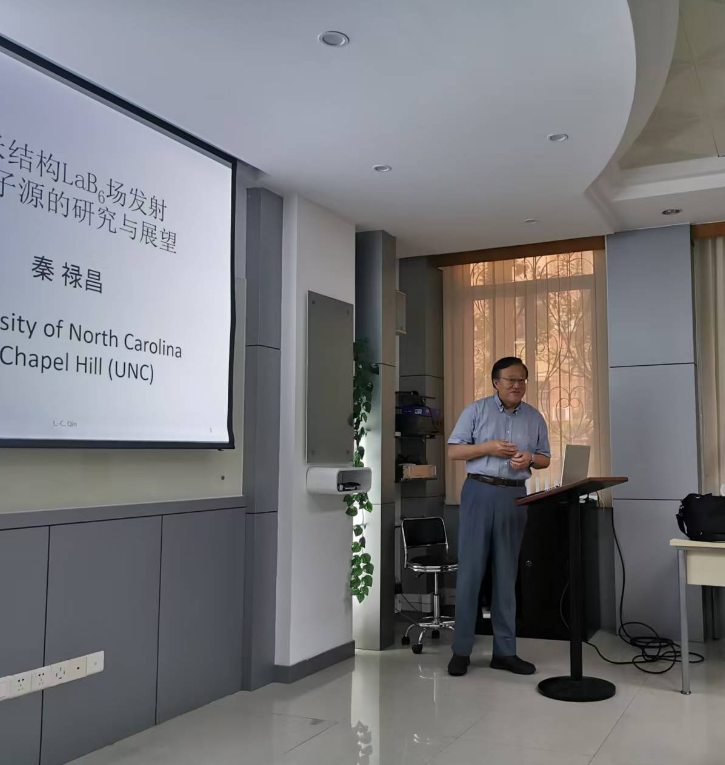

Latest News
- Congrats: Yiming Huang, as the first author, published a paper titled "Effect of Hydrogen Plasma Pretreatment on the Nucleation and Growth of Vertical Few-Layer Graphene Prepared by Microwave Plasma Chemical Vapor Deposition" in Carbon (Y. M. Huang, S. Tang*, S. Z. Deng, H. K. Guan, H. N. Zhao, R. Z. Zhan, L. Gong, P. Liu, Y. Zhang, Y. Shen. Carbon, 2025, 235:120061). 2025.01
-
Haonan Zhao, Mingkai Gou, Yiming Huang, and Junhao Zhong attended the 2024 Academic Annual Conference of the Chinese Vacuum Society in Xi'an, Shaanxi Province.
 2024.10.28
2024.10.28
- Haokun Guan, Yingzhou Hu, and Qinggang Qin participated in the 2024 National Academic Annual Conference on Electron Microscopy at the Dongguan Convention and Exhibition International Hotel. 2024.10.08
- Yingzhou Hu, Qinggang Qin, Mingkai Gou, Yiming Huang, Jiayou Wu, Milan Wang, Caijian Zhang, Haokun Guan, Zhongling Liu, and Zili Yan attended the High-End Academic Forum on Information Science and Technology organized by the Faculty of Information at Liang Qichao Hall, Sun Yat-sen University, Guangzhou, Guangdong Province. 2024.09.28
- Congrats: Yiming Huang, as the first author, published a paper titled "Field Emission Characteristics from Vertical Few-Layer Graphene Growth on Graphite Substrate" in 2024 37th International Vacuum Nanoelectronics Conference (IVNC) (Y. M. Huang, S. Tang*, M. K. Gou, H. N. Zhao, Y. Shen, Y. Zhang, J. C. She, J. Chen, S. Z. Deng. EI indexed, 2024). 2024.09.04
- Congrats: Junhao Zhong, as the first author, published a paper titled "A Nano-Focus X-Ray Source with Nanoneedle Cold Cathode by Simulation" in 2024 37th International Vacuum Nanoelectronics Conference (IVNC) (J. H. Zhong, S. Tang*, M. K. Gou, Y. Shen, Y. Zhang, Y. M. Huang, J. C. She, J. Chen, N. S. Xu, S. Z. Deng. EI indexed, 2024). 2024.09.04
- Welcome: Yingzhou Hu and Qinggang Qin joined the research group. 2024.09
- Mingkai Gou, Yiming Huang, Haonan Zhao, Jiayou Wu, Milan Wang, Caijian Zhang, Haokun Guan, Zhongling Liu, and Zili Yan participated in the 22nd Academic Annual Conference of the Vacuum Electronics Branch. 2024.05.09
- Mingkai Gou, Yiming Huang, and Junhao Zhong attended the 17th China Electronics Information Annual Conference in Ningbo, Zhejiang Province. 2024.04.26
-
Emeritus professor Pieter Kruit from Delft University of Technology was invited to the research group for an academic seminar titled "Research and Advances in Multi-beam Microscopy.
.jpg)
.jpg) 2023.12.15
2023.12.15
- Jiayou Wu, Milan Wang, Caijian Zhang, Haokun Guan, Zili Yan, and Zhongling Liu participated in the 12th National Doctoral Academic Forum on Electronic Information at the Microelectronics Building, Sun Yat-sen University, Guangzhou, Guangdong Province. 2023.09.02
- Mingkai Gou attended the 15th Pacific Rim Conference on Ceramics & 13th International Conference on Advanced Ceramics in Shenzhen, Guangdong Province. 2023.11.05
- Welcome: Zhongling Liu joined the research group. 2023.11
- Welcome: Caijian Zhang joined the research group. 2023.09.23
- Welcome: Jiayou Wu, Milan Wang, and Haokun Guan joined the research group. 2023.09.01
- Mingkai Gou, Yiming Huang, and Junhao Zhong participated in the 2023 Academic Annual Conference of the Chinese Vacuum Society in Guangzhou, Guangdong Province. 2023.08.07
- Haonan Zhao attended the 14th Guo Kexiao Summer School on Electron Microscopy and Crystallography in Guangzhou, Guangdong Province. 2023.07.10
- Prof. Lu-Chang Qin from University of North Carolina at Chapel Hill (UNC) was invited to the research group for an academic seminar.  2023.06.02
- Welcome: Zili Yan joined the research group. 2023.05.24
- Welcome: Mingkai Gou, Yiming Huang, Junhao Zhong, and Haonan Zhao joined the research group. 2022.09